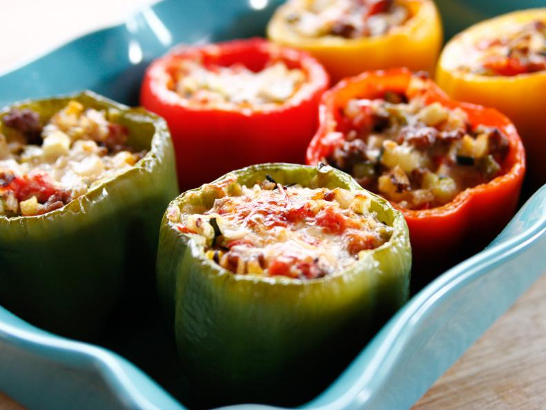

Stuffed Bell Peppers

Making Stuffed Bell Peppers
Stuffed peppers are what weeknight breams are made of. Whip up a hearty
filling of rice, beef, and veggies, then top the peppers with plenty of
gooey cheese.
Ingredients:
- 6 bell peppers, any color
- 4 tablespoon olive oil, plus more for drizzling
- 8 ounces lean ground beef
- Kosher salt and freshly ground black pepper
- 1 onion, finely diced
- 2 cloves garlic, chopped
- 1 medium zucchini, finely diced
- 4 Roma tomatoes, seeded and finely diced
- Red pepper flakes, as needed
- 1 cup cooked long-grain and wild rice
- 1 1/2 cups grated pepper Jack cheese
Steps:
- Preheat the oven to 350 degrees F.
-
Cut the tops off the peppers. Remove and discard the stems, then finely
chop the tops; set aside. Scoop out the seeds and as much of the
membrane as you can. Place the peppers cut-side up in a baking dish just
large enough to hold them upright.
-
Heat 2 tablespoons of the olive oil in a large skillet over medium-high
heat. Add the beef, season with salt and pepper and cook, breaking up
the lumps, until the meat is cooked through and just beginning to brown,
8 to 10 minutes. Remove to a paper towel-lined plate to get rid of the
fat.
-
Wipe out the skillet and add the remaining 2 tablespoons olive oil. Add
the onions and chopped peppers and cook until beginning to soften, 3 to
4 minutes. Add the garlic and zucchini and cook for another minute. Add
the tomatoes and season with salt and a pinch or 2 of red pepper flakes.
Cook until everything is heated through, then stir in the beef and rice.
Taste and adjust the seasoning. Stir in 1 cup of the cheese.
-
Fill the peppers with the rice mixture and top each with a sprinkle of
the remaining 1/2 cup cheese. Pour a small amount of water into the
bottom of the baking dish and drizzle the peppers with a little olive
oil. Cover with foil and bake for 30 minutes. Uncover and bake until the
peppers are soft and the cheese is melted and lightly browned, another
15 to 20 minutes.
Home